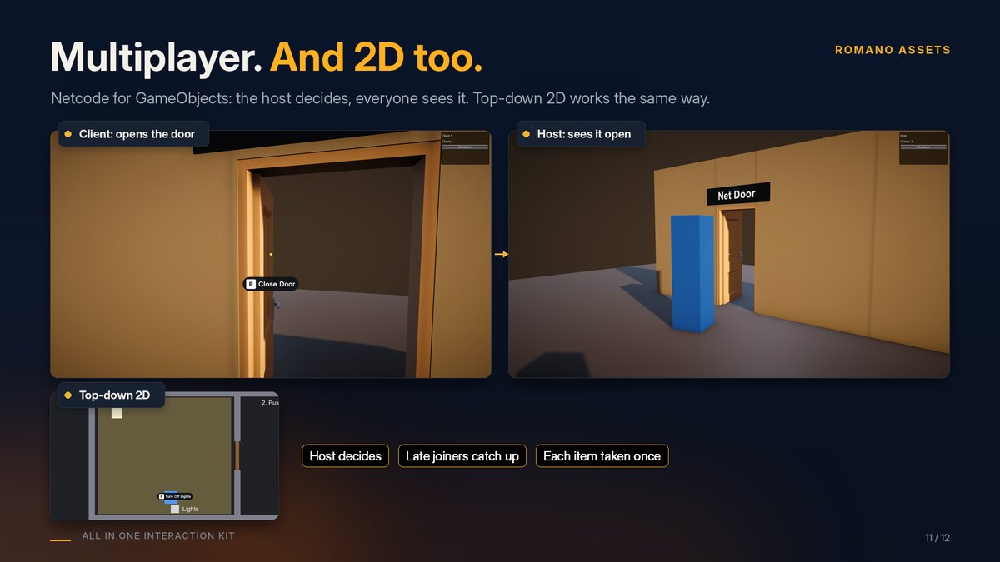

Multiplayer (Netcode for GameObjects)
Works when your project has Netcode for GameObjects 2.0 or newer. Without it, the multiplayer parts simply don't compile and everything else works as normal.

How it works #
- The host decides every interaction: a client asks, the host checks range, locks and the rest, then applies it.
- The result reaches every player, and players who join later see doors and drawers exactly as they are.
- If the host refuses, the player who asked gets the reason ("Locked") in their prompt.
Set up #
- On each interactive object: a Network Object (on the object or a parent) and a Network Interactable next to
its Interactable. For models made with the Setup Wizard, the Interactable is on the moving part (for example
door): put the Network Interactable there and the Network Object on the prefab's root. - On the player prefab: the usual Interactor, discovery and input. Only the owner's copy should read input: see
Samples/Netcode/SampleNetworkPlayer.cs. - Prompts follow the local player automatically when Interactor is left empty.
Try Samples/Scenes/InteractionKit_DemoNetcode: click Host in one build or editor and Client in another
(Multiplayer Play Mode works too).
Power and loot #
- Pressure plates, gates with delays or toggles, and puzzles: add Network Power Source so every player gets the host's value. Switches and levers are already shared through Network Interactable.
-
Loot containers: add Network Loot Delivery next to the Network Interactable. Each item can be taken once, and it is delivered on the machine of the player who opened the container.
-
Carry, item sockets and keypads: see Carry, sockets, inspect, notes and keypads.
Good to know #
- Tween drives are best for networked doors: every player sees the same smooth motion. Physics doors are simulated on each machine; their open/closed state is shared.
- Only the durable state is sent (open or closed, locked or not, key taken), never every frame of motion.